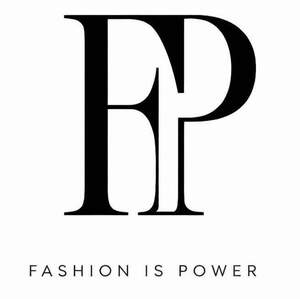

Trade Mark Journal No.2026/006 6 February 2026
UK00004327472 21 January 2026 (35,41,42,45)

- Class 35
- Retail services in relation to fashion accessories; Fashion show exhibitions for commercial purposes; Promoting the sale of fashion goods through promotional articles in magazines; Publication of advertising literature; Magazine advertising; Fashion shows for promotional purposes (Organization of -); Organization of fashion shows for promotional purposes; Advertising services for the literary industry; Organization of fashion parades for sales promotion purposes; Newspaper advertising; Providing marketing consulting in the field of social media; Providing advertising space in periodicals, newspapers and magazines; Marketing research in the fields of cosmetics, perfumery and beauty products; Providing business information in the field of social media; Advertising in the popular and professional press; Business management of sports personalities; Analysis of business trends; Publication of advertising matter; Advertising copywriting.
- Class 41
- Freelance journalism; Entertainment in the nature of fashion shows; Journalism services; Organisation of fashion shows for entertainment purposes; Organization of fashion parades for entertainment purposes; Education services relating to fashion; Organizing and presenting displays of entertainment relating to style and fashion; Fashion shows for entertainment purposes (Organization of -); Organization of fashion shows for entertainment purposes; Multimedia publishing of magazines; Multimedia publishing of magazines, journals and newspapers; Multimedia publishing of newspapers; Publication of documents in the field of training, science, public law and social affairs; Publication of consumer magazines; Education, entertainment and sports; News syndication for the broadcasting industry; Entertainment in the nature of television news shows; Publishing of newspapers; Magazine publishing; Newspaper publishing; Multimedia publishing of journals; Publishing of web magazines; Organisation of competitions [education or entertainment]; Organisation of competitions (education or entertainment); Competitions (organisation of -) [education or entertainment]; Organization of competitions [education or entertainment]; Competitions (Organization of -) [education or entertainment]; Organization of competitions for education or entertainment; Multimedia publishing; Publishing of magazines in electronic form on the Internet; Photography; Arranging of competitions for education or entertainment; Beauty arts instruction; Publishing, reporting, and writing of texts; Publishing of electronic publications.
- Class 42
- Fashion design; Design of fashion accessories; Fashion design consulting services; Providing information about fashion design services; Design of clothing; Design for others in the field of clothing; Commercial art design.
- Class 45
- Fashion information; Personal fashion consulting services; Providing fashion information; Providing information about fashion.
Shahida Sabah Aziz